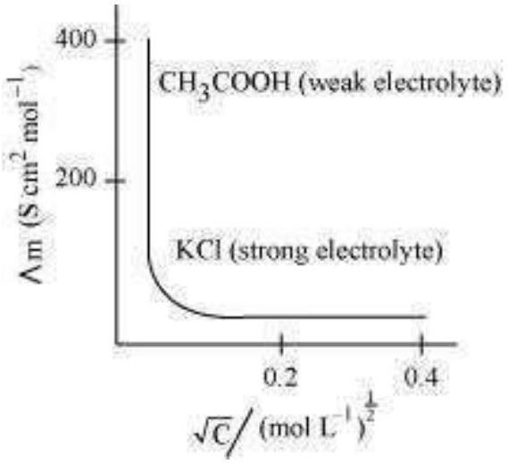
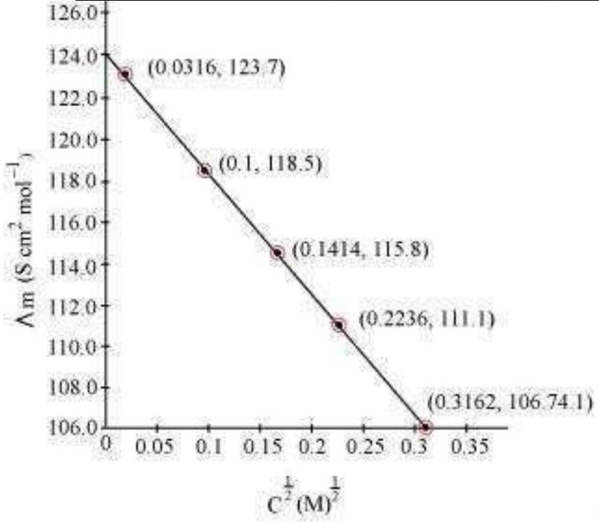

Represent the cell in which the following reaction takes place Mg(s)+2 Ag+(0.0001 M) → Mg2+(0.130 M)+2 Ag(s)
Calculate its E(cell) if E(cell) ° = 3.17 V.
Calculate the equilibrium constant of the reaction:
Cu( s)+2 Ag+(aq) → Cu2+(aq)+2 Ag( s)E(cell )o = 0.46 V
The standard electrode potential for Daniell cell is 1.1V.
Calculate the standard Gibbs energy for the reaction:
Zn( s)+Cu2+(aq) → Zn2+(aq)+Cu( s)
Resistance of a conductivity cell filled with 0.1 mol L-1 KCl solution is 100 Ω. If the resistance of the same cell when filled with 0.02 mol L-1 KCl solution is 520 Ω, calculate the conductivity and molar conductivity of 0.02 mol L-1 KCl solution. The conductivity of 0.1 mol L-1 KCl solution is 1.29 S / m.
The electrical resistance of a column of 0.05 mol L-1 NaOH solution of diameter 1 cm and length 50 cm is 5.55 × 103 ohm. Calculate its resistivity, conductivity and molar conductivity.
The molar conductivity of KCl solutions at different concentrations at 298 K are given below:
| c / m o l - 1 | Λm / S c m2 m o l- 1 |
|---|---|
| 0.000198 | 148.61 |
| 0.000309 | 148.29 |
| 0.000521 | 147.81 |
| 0.000989 | 147.09 |
Show that a plot between Λm and c1 / 2 is a straight line. Determine the values of Λm° and A for KCl.
Calculate Λm0 for CaCl2 and MgSO4 from the data given in Table 3.4.
Λm0 for NaCl, HCl and NaAc are 126.4, 425.9 and 91.0 S cm2 mol-1 respectively. Calculate Λ0 for HAc.
The conductivity of 0.001028 mol L-1 acetic acid is 4.95 × 10-5 S cm-1. Calculate its dissociation constant if Λm0 for acetic acid is 390.5 S cm2 mol-1.
A solution of CuSO4 is electrolysed for 10 minutes with a current of 1.5 amperes. What is the mass of copper deposited at the cathode?
How would you determine the standard electrode potential of the system Mg2+ | Mg?
Can you store copper sulphate solutions in a zinc pot?
Consult the table of standard electrode potentials and suggest three substances that can oxidise ferrous ions under suitable conditions.
Calculate the potential of hydrogen electrode in contact with a solution whose pH is 10.
Calculate the emf of the cell in which the following reaction takes place:
Ni( s)+2 Ag+(0.002 M) → Ni2+(0.160 M)+2 Ag( s)
Given that Ecell o = 1.05 V
The cell in which the following reaction occurs:
2 Fe3+(aq)+2 I-(aq) → 2 Fe2+(aq)+I2( s) has Ecell o = 0.236 V at 298 K .
Calculate the standard Gibbs energy and the equilibrium constant of the cell reaction.
Why does the conductivity of a solution decrease with dilution?
Suggest a way to determine the Λm° value of water.
The molar conductivity of 0.025 mol L-1 methanoic acid is 46.1 S cm2 mol-1. Calculate its degree of dissociation and dissociation constant. Given λ0(H+) = 349.6 S cm2 mol-1 and λ0(HCOO-) = 54.6 S cm2 mol-1.
If a current of 0.5 ampere flows through a metallic wire for 2 hours, then how many electrons would flow through the wire?
Suggest a list of metals that are extracted electrolytically.
Consider the reaction: Cr2 O7 2-+14 H++6 e- → 2 Cr3++7 H2 O
What is the quantity of electricity in coulombs needed to reduce 1 mol of Cr2 O7 2- ?
Write the chemistry of recharging the lead storage battery, highlighting all the materials that are involved during recharging.
Suggest two materials other than hydrogen that can be used as fuels in fuel cells.
Explain how rusting of iron is envisaged as setting up of an electrochemical cell.
Arrange the following metals in the order in which they displace each other from the solution of their salts.
Al, Cu, Fe, Mg and Zn.
Given the standard electrode potentials,
K+ / K = -2.93 V, Ag+ / Ag = 0.80 V,
Hg2+ / Hg = 0.79 V
Mg2+ / Mg = -2.37 V, Cr3+ / Cr = -0.74 V
Arrange these metals in their increasing order of reducing power.
Depict the galvanic cell in which the reaction
Zn(s)+2 Ag+(aq) → Zn2+(aq)+2 Ag(s) takes place. Further show:
Calculate the standard cell potentials of galvanic cell in which the following reactions take place:
Calculate the Δr G° and equilibrium constant of the reactions.
Write the Nernst equation and emf of the following cells at 298 K:
In the button cells widely used in watches and other devices the following reaction takes place:
Zn(s)+Ag2 O(s)+H2 O(l) → Zn2+(aq)+2 Ag(s)+2 OH-(aq)
Determine Δr G° and E° for the reaction.
Define conductivity and molar conductivity for the solution of an electrolyte.
Discuss their variation with concentration.

The conductivity of 0.20 M solution of KCl at 298 K is 0.0248 S cm -1. Calculate its molar conductivity.
The resistance of a conductivity cell containing 0.001M KCl solution at 298 K is 1500 Ω. What is the cell constant if conductivity of 0.001 M KCl solution at 298 K is 0.146 × 10-3 S cm-1.

The conductivity of sodium chloride at 298 K has been determined at different concentrations and the results are given below:
| Concentration / M | 0.001 | 0.010 | 0.020 | 0.050 | 0.100 |
|---|---|---|---|---|---|
| 102 × κ / S m-1 | 1.237 | 11.85 | 23.15 | 55.53 | 106.74 |
Calculate Λm for all concentrations and draw a plot between Λm and c1 / 2. Find the value of Λm0.
| C1 / 2 / M1 / 2 | 0.0316 | 0.1 | 0.1414 | 0.2236 | 0.3162 |
|---|---|---|---|---|---|
| Λm( S cm2 mol-1) | 123.7 | 118.5 | 115.8 | 111.1 | 106.74 |
Conductivity of 0.00241 M acetic acid is 7.896 × 10-5 S cm-1. Calculate its molar conductivity. If Λm0 for acetic acid is 390.5 S cm2 mol-1, what is its dissociation constant?
How much charge is required for the following reductions:
How much electricity in terms of Faraday is required to produce
20.0 g of Ca from molten CaCl2 ?
40.0 g of Al from molten Al2 O3 ?
How much electricity is required in coulomb for the oxidation of
A solution of Ni(NO3)2 is electrolysed between platinum electrodes using a current of 5 amperes for 20 minutes. What mass of Ni is deposited at the cathode?
Three electrolytic cells A,B,C containing solutions of ZnSO4, AgNO3 and CuSO4, respectively are connected in series. A steady current of 1.5 amperes was passed through them until 1.45 g of silver deposited at the cathode of cell B. How long did the current flow? What mass of copper and zinc were deposited?
Using the standard electrode potentials given in Table 3.1, predict if the reaction between the following is feasible:
Predict the products of electrolysis in each of the following: